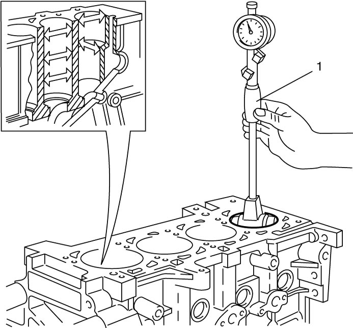
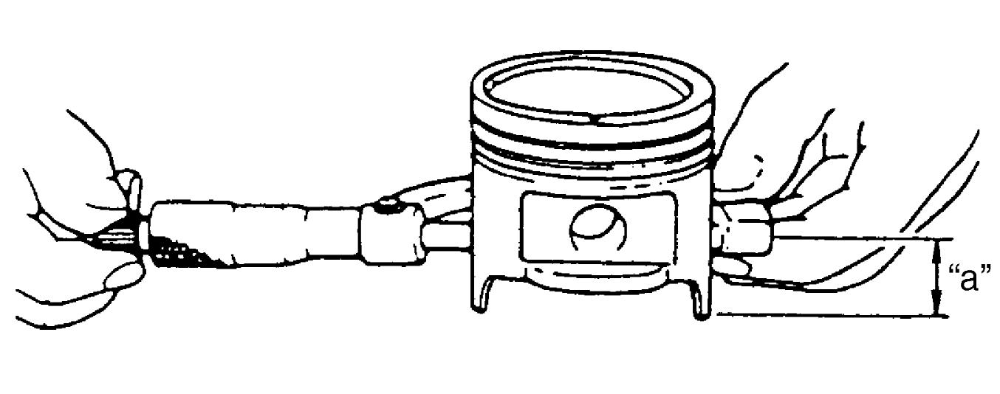
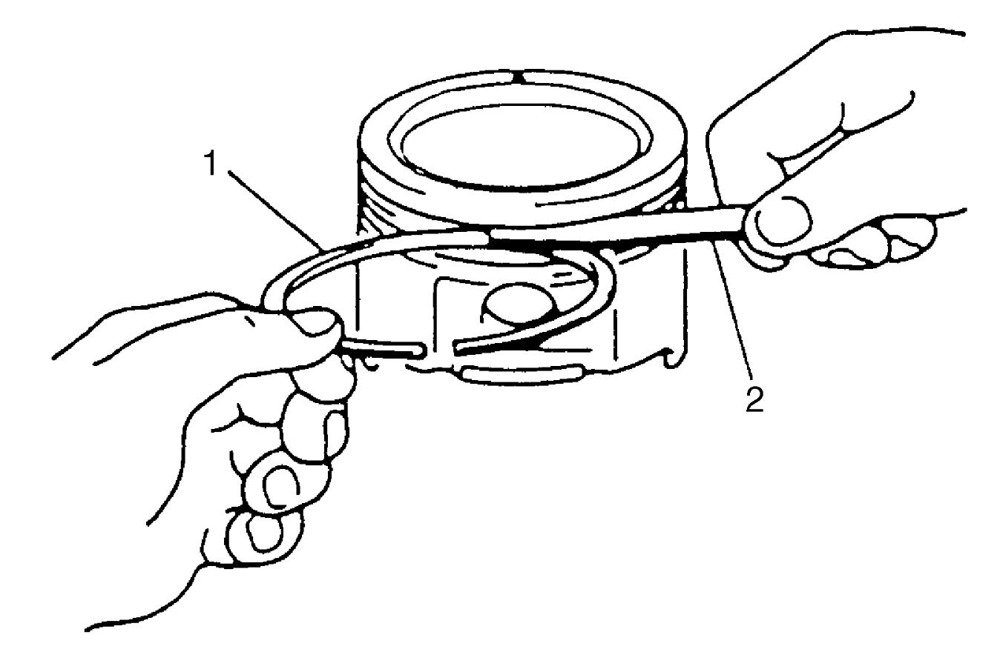
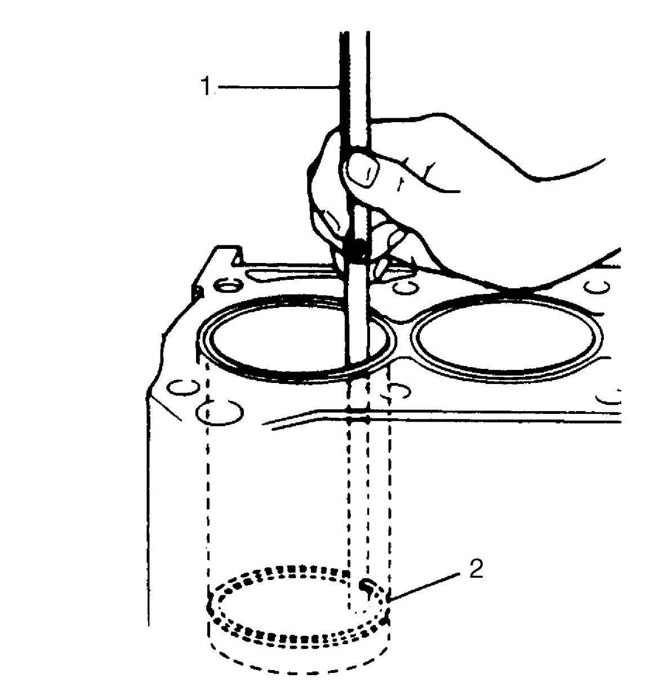

1D
| Cylinder, Piston and Piston Ring Inspection |
Cylinder
Visual inspection
Check cylinder walls for scratches, roughness or ridges which indicate excessive wear. If cylinder bore is very rough, deeply scratched or ridged, rebore cylinder and use oversize piston or replace cylinder.
Cylinder diameter
Using a cylinder gauge (1), measure cylinder bore in thrust and axial directions at two positions as shown in figure.
If any of the following conditions is found, rebore cylinder.
•Cylinder bore diameter exceeds specification.
•Difference of measurements at two positions exceeds taper limit.
•Difference between thrust and axial measurements exceeds out-of-round limit.

•Difference of measurements at two positions exceeds taper limit.
•Difference between thrust and axial measurements exceeds out-of-round limit.
Cylinder bore diameter
Size A: 79.500 – 79.510 mm (3.1299 – 3.1303 in.)
Size B: 79.510 – 79.520 mm (3.1303 – 3.1307 in.)
Size C: 79.520 – 79.530 mm (3.1307 – 3.1311 in.)
Taper
Limit: 0.005 mm (0.00020 in.)
Out-of-round
Limit: 0.05 mm (0.0020 in.)
NOTE:
If any one of four cylinders has to be rebored, rebore all of them to the same size.
This is necessary for the sake of uniformity and balance.

 "Expand image")
Piston
Visual inspection
Check piston for faults, crack or other damages.
Damaged or faulty piston should be replaced.
Piston diameter
Piston diameter should be measured at a position “a” from piston skirt end in the direction perpendicular to piston pin as shown in figure.
Piston diameter specification
Size A: 79.440 – 79.450 mm (3.1275 – 3.1279 in.)
Size B: 79.450 – 79.460 mm (3.1279 – 3.1283 in.)
Size C: 79.460 – 79.470 mm (3.1283 – 3.1287 in.)

 "Expand image")
| “a”: | 7.0 mm (0.27 in.) |
Piston clearance
Measure cylinder bore diameter and piston diameter to find their difference which is piston clearance.
If it is not as specified, rebore cylinder and use oversize piston.
Piston clearance
0.06 – 0.08 mm (0.0024 – 0.0031 in.)
NOTE:
Cylinder bore diameters used here are measured in thrust direction at two positions.
Ring groove clearance
Before checking, piston grooves must be clean, dry and free of carbon deposits.
Fit new piston ring (1) into piston groove, and measure clearance between ring and ring land using feeler gauge (2).
If clearance is not as specified, replace piston and/or piston ring.
Ring groove clearance
1st ring: 0.115 – 0.170 mm (0.00452 – 0.00669 in.)
2nd ring: 0.050 – 0.090 mm (0.00197 – 0.00354 in.)
Oil ring: 0.030 – 0.070 mm (0.00118 – 0.00275 in.)

 "Expand image")
Piston weight
Check weight difference between all pistons. If difference exceeds limit, replace pistons.
Difference of weight between all pistons
Limit: – 5 to 5 g
Piston Ring
Piston ring end gap
Insert piston ring (2) into cylinder bore and then measure the end gap using feeler gauge (1).
If measured end gap is not as specified, replace ring.
NOTE:
Remove carbon deposit and clean top of cylinder bore before inserting piston ring.
Piston ring end gap
Top ring: 0.20 – 0.35 mm (0.0078 – 0.0137 in.)
2nd ring: 0.60 – 0.80 mm (0.0236 – 0.0314 in.)
Oil ring: 0.25 – 0.50 mm (0.0098 – 0.0196 in.)

 "Expand image")